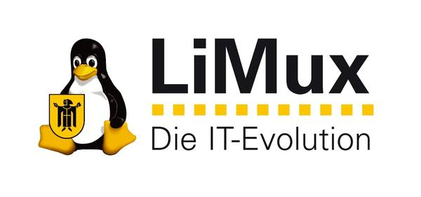

Custom Linux Distributions
I specialise in creating custom Linux distros.
I am the first Ubuntu Core Developer, Ubuntu Release Team member and developer of the first Ubuntu flavour, Kubuntu.
I created a custom Linux distribution for cash machine market leader NCR to run on their machines in place of Windows.
I create the desktop showcase KDE neon, for the first time integrating deployment with continuous integration directly in the community who make the software.
Open Source Desktop Installations
My software is used in the world's largest Linux desktop rollouts. I have also helped many individuals install Linux on their desktops. I can provide advice and help in converting your systems to free software.


App Development
I use Qt to create apps which work across platforms, on Windows, Mac, Linux, iOS and Android.

Community Management
I have organised open source communities for over a decade, running projects with KDE, Ubuntu and independently.
I can help you organise your software project as a community orientated project, using the power of the internet to create a competitive advantage.
Paddle Coaching
I am a Paddle UK qualified coach for kayak and open canoeing.
My Qualifications
White Water Coach
Advanced White Water River Leader
Discipline specifics: freestyle & canoe polo coach
D1 minibus driving licence
Training and Assessments I Can Provide
Paddle Start
Paddle Discover
Paddle Explore
White Water Award
Paddlesport Safety and Rescue
Uncertified Sessions
Rolling Clinic
Freestyle Basics
Canoe polo
Paddleability, for those without full body use and aquired brain injury
Moving Water Safety and Rescue for river conservation workers
Some previous coaching sessions I have run
Bespoke Moving Water Safety and Rescue training for Forth Rivers Trust.
Hen Party for My Adventure. Canadian canoe trip on the Union canal with coaching the basics, games and pub stop.
FSRT for Edinburgh Kayak Club. Teaching bank and boat based rescues in kayaks and Canadians and even some SUPs.
Children's summer courses for Forth Canoe Club. 8-12 year olds introduction to canoe polo.
Freestyle coaching for Paddle Scotland (SCA) Freestyle at Pinkston. Learning how to do loops on flat water then into the hole.
Intro to Canadian canoeing to disruptive children for Active Stirling. Children who don't appreciate a classroom now appreciate the outdoors.
3 Star White Water assessment for Napier Kayak Club. Testing they can paddle on rivers.
Kayak introduction for Headway Edinburgh. A new sport for people with aquired brain injuries.
Canoe Taster Sessions for Edinburgh Canal Festival. Introducing 100 people to paddling in a day.
Guide for Forth Rivers Trust down the Fife River Leven, see video:
Rooms to Rent
My house, Esk Tower, in Gorebridge has two rooms for short term accomodation.
Gorebridge is a village south of Edinburgh. There is a train station at my back garden which takes a 25 minute ride to central Edinburgh.
Rooms are newly insulated and rebuilt.
Wood burning stove in top room.
The house is in a quiet glen with a terraced garden, shops, pub, busses and train station are a 3 minute walk each. Shared kitchen, bathroom and living room.
Cost is £50 per night per room plus £15 per night for a second person.
Private parking is included.
A third room or camping may be available on request.
To book contact me and we'll do a WhatsApp video call to show you around, agree on price and let you decide if you want to go ahead. Payment is on arrival in £ or € by bank transfer.
Publications
| Linux Desktop Hacks - Contributing Author | |
| Open Advice: What would you have liked to know when you started contributing? - Contributing Author | |
 | Freestyle Kayaking - Translator |
| Scottish White Water - Sub-Editor | |
| Paddle Scotland - Sub-Editor |
Helping Paddling Community
- I am secretary of funding charity the Andy Jackson Fund for Access
- I wrote and maintain the river levels website Paddle Scotland Where's the Water
- For Scouts I am the Scotland Region Assessor for White Water Kayaking
Costs and Contact
- Costs
- Computer consulting £500/€600 a day, subject to negotiation.
- Paddle coaching £200 plus £5 each person plus petrol plus certificate fees (or £20 an hour), subject to negotiation.
- Contact
- jriddell.org
- Edinburgh, EU
- jr@jriddell.org
- +44 7941 938912